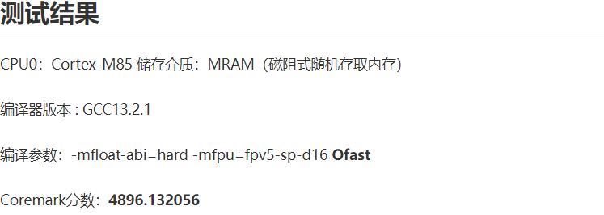
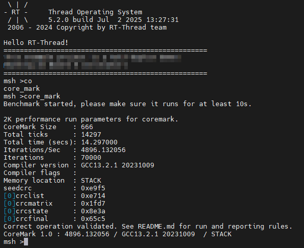
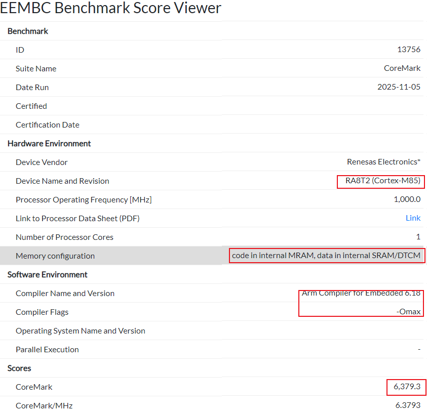

一、RA8P1 CoreMark 6300分优化配置指南
一、概述
-
本文旨在解析如何通过关键配置，将RA8P1（Cortex-M85内核）的CoreMark分数提升至官网登记的6300分。
-
内容涵盖编译器优化选项、链接时优化（LTO）、以及关键的硬件特性（如Cache和TCM）配置。
二、资料来源
-
GCC/Clang LTO技术文档等：
-
RT-thread Titan:
- https://club.rt-thread.org/ask/article/3387ad4472d12ead.html
- https://club.rt-thread.org/ask/article/9367fd1549231fb8.html
- https://github.com/RT-Thread-Studio/sdk-bsp-ra8p1-titan-board
- https://rt-thread-studio.github.io/sdk-bsp-ra8p1-titan-board/latest/index_zh.html
- https://gitee.com/RT-Thread-Studio-Mirror/sdk-bsp-ra8p1-titan-board
三、RT-Thread测评RA8P1 coremark
- 日志：CoreMark 1.0 : 4896.132056 / GCC13.2.1


四、EEMBC Benchmark RA8P1
- Scores CoreMark 6,379.3

五、使用Titan Board挑战coremark 6300

5.1 e2studio项目
- 1、daplink转jlinkob，见资料链接
- 2、
- ra8p1_coremark_gcc
- ra8t2_coremark_gcc
- ra8t2_coremark_iarbuild
- ra8t2_coremark_llvm
- 3、日志：CoreMark 1.0 : 4875.076173 / GCC13.2.1
[14:46:31.913]收←◆
Toolchain ver:13.2.1 20231009
date:Mar 28 2026
time:21:45:54
file:../src/hal_entry.c
func:hal_entry,line:127
hello world!
MPU supports 8 regions
Region 0: 0x68000000-0x67FFFFE0, AttrIndex=0
Region 1: 0x80000000-0x7FFFFFE0, AttrIndex=0
Region 2: 0x70000000-0x6FFFFFE0, AttrIndex=0
Region 3: 0x220001E0-0x220001C0, AttrIndex=0
Region 4: Disabled
Region 5: Disabled
Region 6: Disabled
Region 7: Disabled
start coremain!
[14:46:48.359]收←◆2K performance run parameters for coremark.
CoreMark Size : 666
Total ticks : 16410
Total time (secs): 16.410000
Iterations/Sec : 4875.076173
Iterations : 80000
Compiler version : GCC13.2.1 20231009
Compiler flags : Please put compiler flags here (e.g. -ofast)
Memory location : STACK
seedcrc : 0xe9f5
[0]crclist : 0xe714
[0]crcmatrix : 0x1fd7
[0]crcstate : 0x8e3a
[0]crcfinal : 0xcc42
Correct operation validated. See README.md for run and reporting rules.
CoreMark 1.0 : 4875.076173 / GCC13.2.1 20231009 Please put compiler flags here (e.g. -ofast) / STACK
terminated coremain!
running!
5.3 Keil项目
5.3.1 Optimization:-Omax
- Keil MDK的 Project -> Options for Target -> C/C++ AC6 -> Optimization:-Omax
- 日志：CoreMark 1.0 : 4122.011542 Clang 20.0.0git
[22:24:58.345]收←◆2K performance run parameters for coremark.
CoreMark Size : 666
Total ticks : 19408
Total time (secs): 19.408000
Iterations/Sec : 4122.011542
Iterations : 80000
Compiler version : GCCClang 20.0.0git
Compiler flags : Please put compiler flags here (e.g. -ofast)
Memory location : STACK
seedcrc : 0xe9f5
[0]crclist : 0xe714
[0]crcmatrix : 0x1fd7
[0]crcstate : 0x8e3a
[0]crcfinal : 0xcc42
Correct operation validated. See README.md for run and reporting rules.
CoreMark 1.0 : 4122.011542 / GCCClang 20.0.0git Please put compiler flags here (e.g. -ofast) / STACK
terminated coremain!
running!
5.3.2 Misc Controls:-Omax
- Keil MDK的 Project -> Options for Target -> C/C++ AC6 -> Misc Controls:-Omax
- Keil MDK的 Project -> Options for Target -> C/C++ AC6 -> **Misc Controls: --via=./via/rasc_armasm.via
\via\rasc_armclang.via -Os -> -Omax - CoreMark 1.0 : 6163.803066 Clang 20.0.0git
[22:25:17.808]收←◆2K performance run parameters for coremark.
CoreMark Size : 666
Total ticks : 12979
Total time (secs): 12.979000
Iterations/Sec : 6163.803066
Iterations : 80000
Compiler version : GCCClang 20.0.0git
Compiler flags : Please put compiler flags here (e.g. -ofast)
Memory location : STACK
seedcrc : 0xe9f5
[0]crclist : 0xe714
[0]crcmatrix : 0x1fd7
[0]crcstate : 0x8e3a
[0]crcfinal : 0xcc42
Correct operation validated. See README.md for run and reporting rules.
CoreMark 1.0 : 6163.803066 / GCCClang 20.0.0git Please put compiler flags here (e.g. -ofast) / STACK
terminated coremain!
running!
六、为什么需要精细配置
RA8P1搭载了ARM最新的Cortex-M85内核，虽然其本身具备强大的处理能力，但要发挥其全部性能潜力，尤其是达到CoreMark 6300分这样的高水平，单纯的默认配置是不够的。CoreMark是一个高度依赖编译器优化和内存访问速度的基准测试程序。为了达到官方登记的性能数据，我们需要进行“榨干式”的配置，让编译器生成最高效的指令，并让CPU能够以最快速度访问数据和指令。
graph TB
subgraph Configs [RA8P1 CoreMark 配置对比]
C1["RT-Thread 测评<br/>GCC 13.2, -Ofast<br/>4896.13<br/>code: MRAM, data: SRAM/DTCM"]
C2["e2studio 项目<br/>GCC 13.2, -Ofast<br/>4875.08<br/>code: MRAM, data: SRAM"]
C3["Keil 项目 (优化)<br/>AC6.24, -Omax<br/>4122.01<br/>code: MRAM, data: SRAM"]
C4["Keil 项目 (Misc)<br/>AC6.24, -Omax<br/>6163.80<br/>code: MRAM, data: SRAM"]
C5["EEMBC 官方<br/>AC6.18, -Omax<br/>6379.30<br/>code: MRAM, data: SRAM/DTCM"]
end
Best["🏆 最高分 6379.3<br/>(EEMBC 官方)"]
C5 --> Best
C4 -.->|接近| Best
C1 -.-> Best
C2 -.-> Best
C3 -.-> Best
style C5 fill:#e0ffe0,stroke:#2e8b57,stroke-width:2px
style Best fill:#ffd700,stroke:#b8860b,stroke-width:2px
style Configs fill:#f5f5f5,stroke:#ccc
七、总结
RA8P1 (Cortex-M85) 达到6300 CoreMark分数并非偶然，它是高性能硬件与极致软件优化的结合。
关键优化手段优先级：
-
编译器优化：必须使用最高级别优化
-Omax，并启用浮点、向量化和循环优化选项。 -
链接时优化 (LTO)：对于跨文件的性能敏感代码，LTO是必不可少的。
-
硬件资源利用：Dcache+sram 和 TCM 的速度没有明显的差异，但TCM直接访问，没有cache缓存相关问题。
理解编译器选项和硬件架构是进行深度优化的基础。不同的应用场景可能需要不同的优化策略，但上述配置方案为榨干Cortex-M85性能提供了一个清晰的模板。